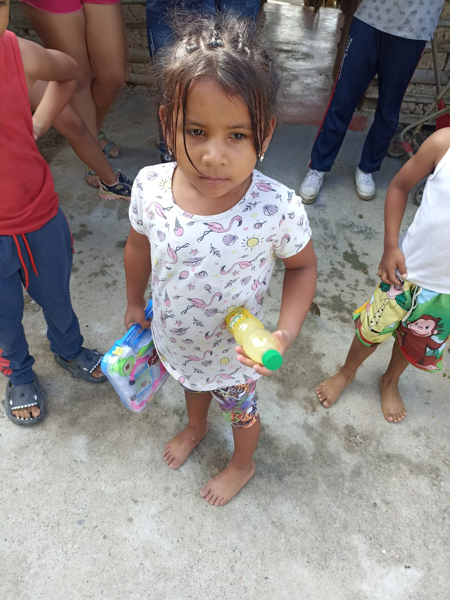
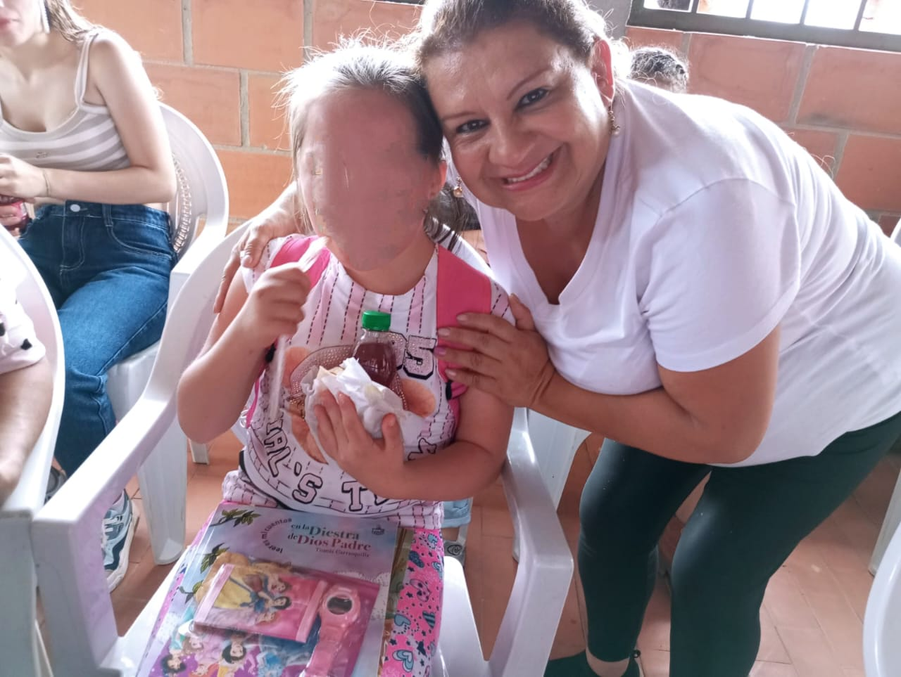

Cada sonrisa, cada avance motriz y cada encuentro con nuestros perros de terapia es posible gracias al trabajo en equipo con las familias.





Conoce de cerca cómo se viven nuestras terapias y encuentros comunitarios.